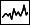
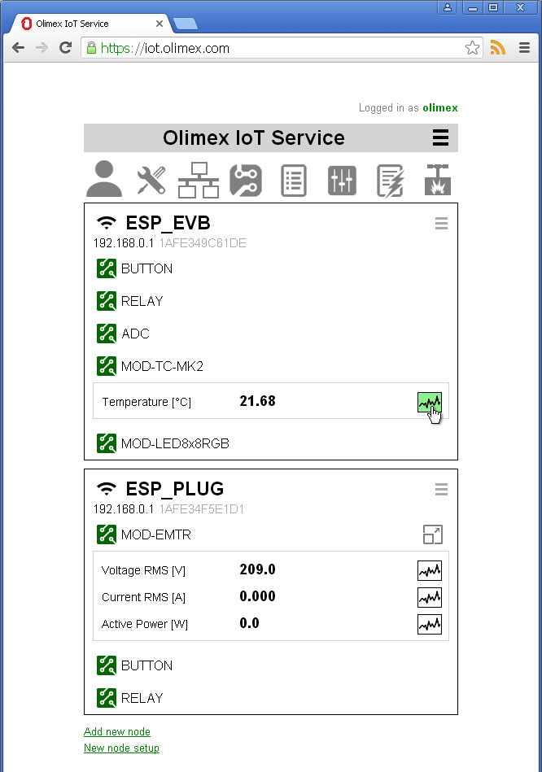
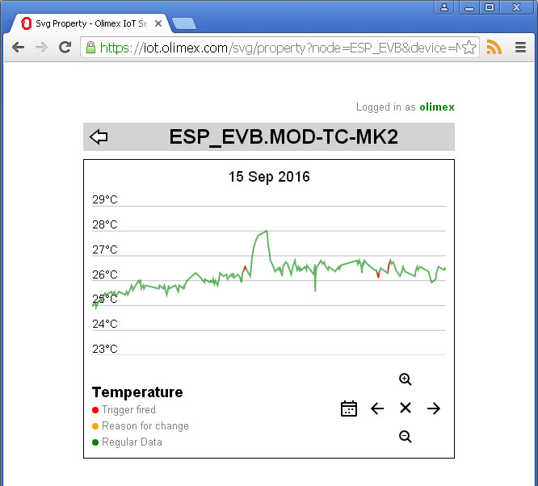
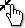
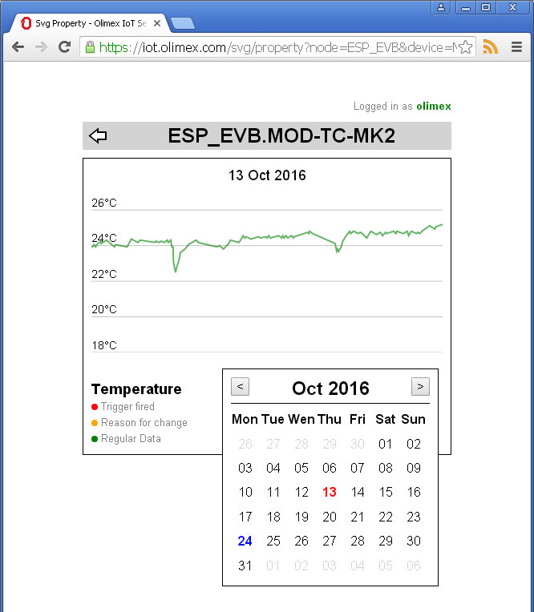
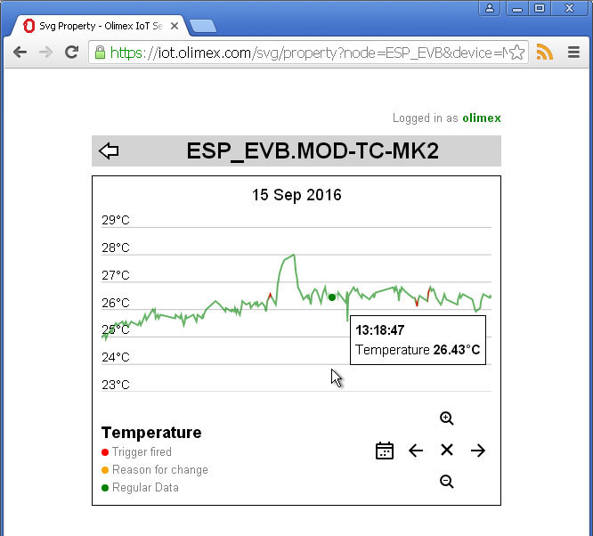
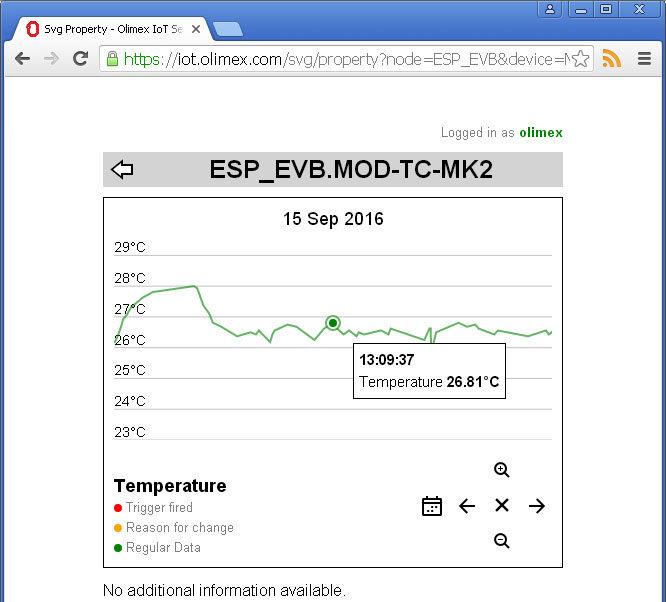
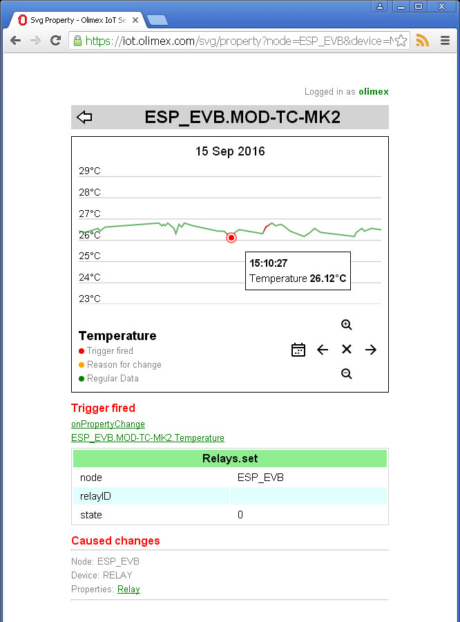
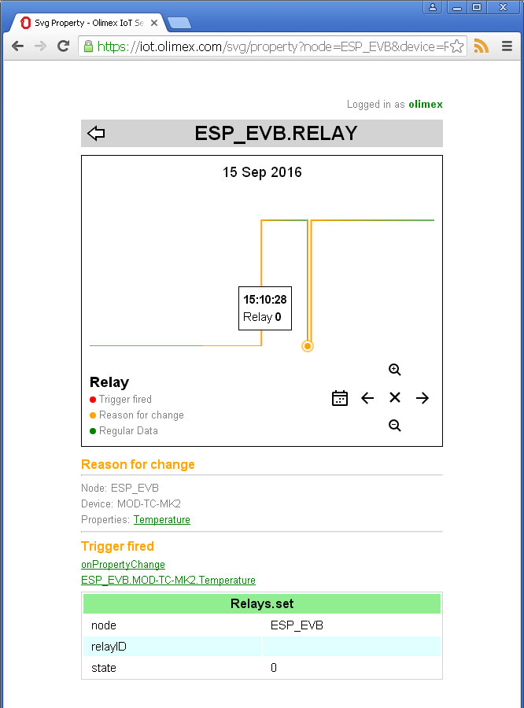

Reset zoom
Reset zoomBack to OlimexIoT Help
You can access Graph Reports trough main screen or trough maximized device view. Each numeric device property has graph icon  on the right side. Click on the icon to see graph report for the property.
Graph Report screen have to look like this
There are four main areas
You can see node name and device for which report is generated as well as date for the report. The date can be changed using navigation area.
In Legend area you can see the name of the property for which report is generated and colors used to display the graph. Basic color used to display the graph is green. If there is something important some points are displayed in different color.
For example if change of property value caused trigger to fire corresponding point is colored in red;
If there is reason for change of the value the corresponding point is colored in orange.
Navigation can be done using icons, mouse or touch screen
| Icon | Mouse | Touch screen |
|---|---|---|
| Zoom-in | Roll mouse wheel toward you | Two fingers swipe out |
| Zoom-out | Roll mouse wheel away from you |  Two fingers swipe in |
| Reset zoom |
Right mouse click | N/A |
| Move left | Drag left | Swipe left |
| Move right | Drag right | Swipe right |
| Select date | N/A | N/A |
When you click on date change icon calnedar window will be open.
Report date is sown in red. Current date is shown in blue. To change the displayed month use and buttons. To change date click on desired date.
To see details for logged data move mouse over graph area.
You can lock current point by mouse click.
When the point is locked the navigation using icons is changed a bit.
If the locked point is important additional information is shown under the graph area.
In this example the locked point is important because value change caused trigger to fire and to execute action Relays.set with parameters node=ESP_EVB and state=0
To see report for caused change click on name of the property (in this case Relay).
In this example the you can see that the reason for change of state is change of value of Temperature property which caused trigger to fire and execute action Relays.set with parameters node = ESP_EVB and state = 0
Back to OlimexIoT Help